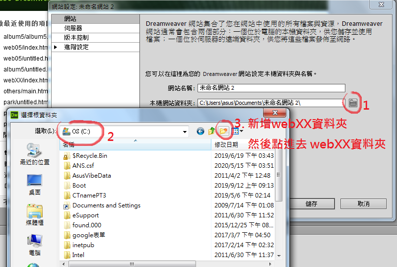
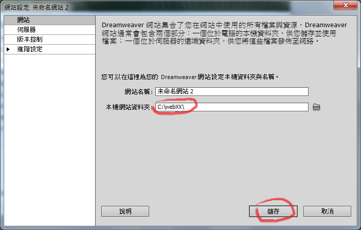

網站的資料夾及檔案位置如下圖：
其中的「main.html」「album5.html」題目沒有講明，需自行(腦補)建立。

開啟Dreamweaver，點選 「網站 → 新增網站」。如下圖：

設定網站資料夾。如下圖：


點選以上任一圖片， 按滑鼠右鍵 → CSS樣式 → 開新檔案
出現下圖後點選「複合」，如下圖，在 img 後面輸入 :hover ，按下「確定」

點選左側分類中的「擴充功能」，如下圖，在 Filter 選單中點選 Invert
在 Invert 後面輸入 (1)

點選「陽明山國家公園」圖片。參照下圖，在屬性面板的「替代」欄位輸入「陽明山國家公園」。
設定「連結」欄位連結至 park 資料夾內的 yangmingshan.html
在「目標」欄位輸入 imain

在 album5資料夾內 新增一個網頁 「 album5.html 」
在7×1表格的右邊點一下滑鼠。按Enter鍵。
輸入「檔案下載」。
選取「檔案下載」四個字
選取「檔案下載」四個字。如下圖，在屬性面板點選 HTML 。
設定「連結」欄位連結至 others 資料夾內的 park.mp3

如下圖。在工具列點選「分割」，找到右邊這行程式碼

在 .mp3" 的後面輸入一個半型空白，及 download

在 webXX 資料夾內，再建立一個網頁 「 main.html 」
點選「玉山國家公園」圖片。
參照下圖，在屬性面板的「替代」欄位輸入「玉山國家公園」。

| (一)建立網站架構 |
| 網站架構圖解 💡 |
1. 在C：磁碟建立本網站主文件資料夾「webXX」，儲存製作完成的結果。(XX為個人檢定工作崗位號碼，如01、02、…、30等)。
💡 → 💡 → 💡 |
| 3-1. 在「webXX」資料夾下建立「images」資料夾， |
| 3-2. 將所有應使用的圖形檔均放置在「images」資料夾中。 |
| 4-1. 在「webXX」資料夾下建立「music」資料夾， |
| 4-2. 將所有應使用到的音樂檔均放置在「music」資料夾中。 |
| 5-1. 在「webXX」資料夾下建立「album5」資料夾， |
| 5-2. 將製作相簿時，所完成的檔案放置於「album5」資料夾中。💡 |
（二）設計首頁，內容包括：
1.首頁檔名為index.htm(l)或default.htm(l)，置於網站的根目錄（C:\webXX）💡 |